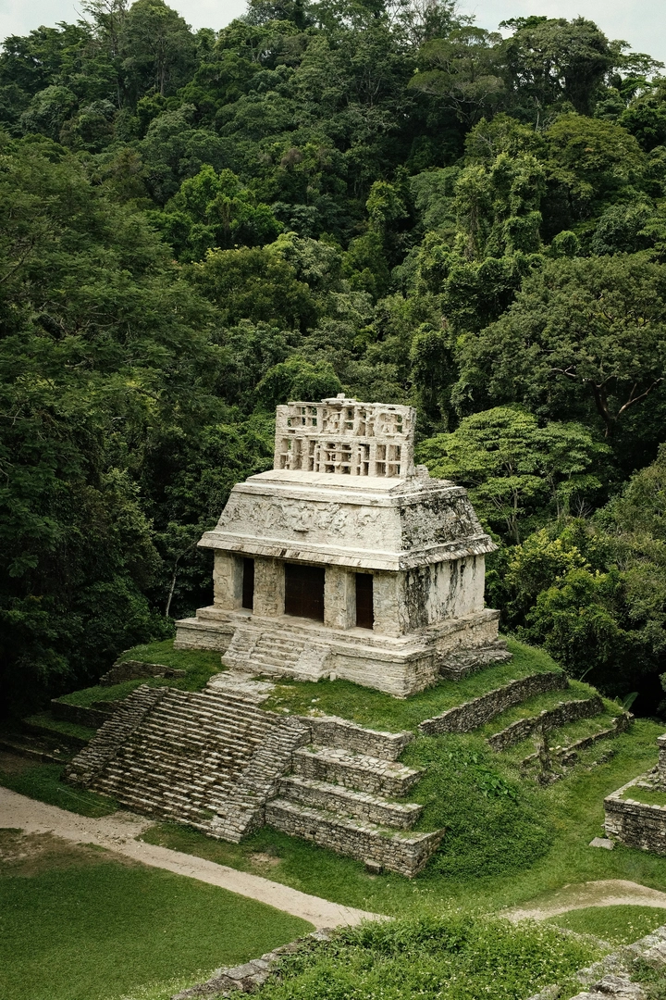
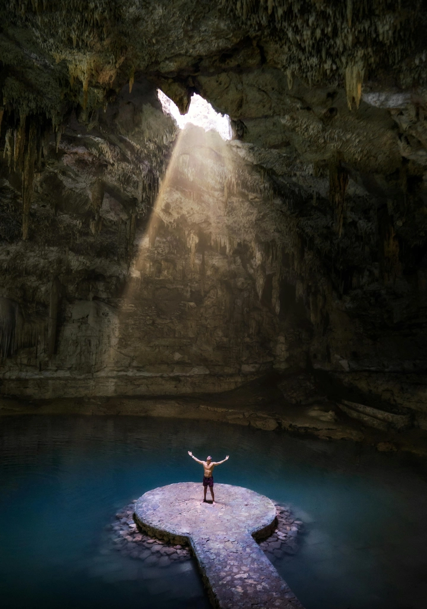
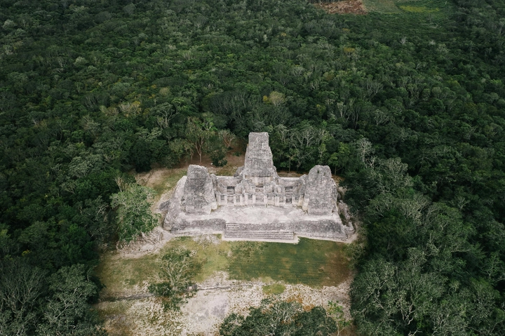

Văn minh Maya: Bí ẩn của trí tuệ và những thành phố lạc giữa rừng già
Giữa vùng rừng rậm rạp của Trung Mỹ, nơi tiếng ve hòa cùng tiếng gió xuyên qua tán cây cổ thụ, ẩn mình những tàn tích đá khổng lồ từng là trung tâm của một trong những nền văn minh rực rỡ nhất trong lịch sử nhân loại – văn minh Maya. Những kim tự tháp phủ rêu, những đền đài khắc chạm tinh xảo, những bức tường kể chuyện bằng ký hiệu tượng hình… tất cả như vẫn thầm thì về một thời kỳ mà trí tuệ con người chạm đến đỉnh cao giữa thiên nhiên hoang dã.
1. Sự hình thành của một nền văn minh giữa rừng rậm
Nền văn minh Maya phát triển rực rỡ tại khu vực Trung Mỹ, bao phủ phần lớn lãnh thổ của Mexico, Guatemala, Belize, Honduras và El Salvador ngày nay. Các nhà khảo cổ học cho rằng người Maya đã bắt đầu hình thành xã hội nông nghiệp và định cư từ khoảng năm 2000 trước Công nguyên, nhưng chỉ thật sự bước vào thời kỳ hoàng kim vào giai đoạn 250–900 sau Công nguyên, được gọi là Thời kỳ Cổ điển (Classic Period).

Trong khi nhiều nền văn minh khác phát triển bên bờ sông lớn, người Maya lại xây dựng xã hội của họ ngay trong lòng rừng rậm – một môi trường tưởng như khắc nghiệt, nhưng lại là nơi nuôi dưỡng một hệ thống đô thị phức tạp, dựa vào khả năng canh tác thông minh và sự hiểu biết sâu sắc về tự nhiên.
2. Những thành phố mất tích dưới tán rừng
Khi các nhà thám hiểm châu Âu đầu tiên tìm thấy Tikal, Palenque, Copán, Calakmul hay Uxmal, họ không thể tin rằng giữa rừng nhiệt đới lại có thể tồn tại những công trình quy mô như vậy. Tikal – trung tâm quyền lực của miền Bắc Guatemala – từng là một đô thị khổng lồ với hơn 100.000 dân, những ngôi đền cao hơn 60 mét, và những quảng trường được lát đá phẳng mịn đến hoàn hảo.
Điều kỳ lạ là người Maya không sử dụng bánh xe, không có công cụ kim loại, cũng không dùng động vật kéo. Mọi khối đá đều được vận chuyển, mài giũa và dựng nên bằng sức người. Dẫu vậy, những công trình của họ vẫn đạt đến độ chính xác về tỷ lệ và hướng chiếu sáng mà ngay cả kỹ sư hiện đại cũng phải kinh ngạc.
3. Kiến trúc và quy hoạch – Sự hòa quyện giữa khoa học và tâm linh
Kiến trúc Maya không chỉ là biểu tượng quyền lực mà còn là thước đo tri thức thiên văn. Nhiều kim tự tháp được xây dựng sao cho ánh mặt trời hoặc bóng trăng chiếu đúng một góc nhất định vào những thời điểm đặc biệt trong năm – như ngày hạ chí hoặc xuân phân.
Tại Chichén Itzá, khi hoàng hôn xuân phân buông xuống, bóng nắng tạo thành hình con rắn đang trườn xuống bậc thang kim tự tháp Kukulcán – một hiện tượng kết hợp hoàn hảo giữa kiến trúc, toán học và niềm tin tôn giáo. Sự tinh tế này cho thấy người Maya không chỉ là những người thợ xây, mà là những nhà toán học – thiên văn học thực thụ.

Hệ thống quy hoạch đô thị cũng mang tính biểu tượng cao: các quảng trường, đền thờ và cung điện được sắp xếp quanh trục trung tâm thiêng liêng, thể hiện mối liên hệ giữa trời, đất và thế giới bên kia – quan niệm cốt lõi trong vũ trụ quan Maya.
4. Ngôn ngữ và chữ viết – Khi biểu tượng trở thành tri thức
Người Maya là nền văn minh duy nhất ở châu Mỹ phát triển được một hệ thống chữ viết hoàn chỉnh – chữ tượng hình Maya (glyphs). Mỗi ký hiệu là sự kết hợp giữa hình ảnh và âm tiết, phản ánh cách họ nhìn thế giới qua biểu tượng.
Các bia đá, bản khắc và bức tường trong đền đài chứa hàng nghìn ký tự kể lại lịch sử các vị vua, những cuộc chiến và nghi lễ thiêng liêng. Sau nhiều thế kỷ, các nhà khảo cổ đã giải mã phần lớn hệ thống này, qua đó hé lộ một kho tàng tri thức khổng lồ về chính trị, văn hóa và tôn giáo Maya.
Một điều đáng chú ý là họ sử dụng lịch Long Count (Đại Chu Kỳ), tính toán chính xác đến từng ngày trong chu kỳ hàng nghìn năm – một thành tựu khiến các nhà thiên văn học hiện đại vẫn phải kinh ngạc vì độ sai lệch gần như bằng không.
5. Toán học và thiên văn học – Ngôn ngữ của vũ trụ
Người Maya sở hữu hệ thống số học thập nhị phân (base 20) và là một trong những nền văn minh đầu tiên sử dụng khái niệm số 0 – điều mà nhiều nền văn minh khác phải mất hàng thế kỷ sau mới phát minh ra.
Nhờ vào đó, họ có thể thực hiện các phép tính thiên văn phức tạp, xác định chính xác chu kỳ của Mặt Trăng, Sao Kim, và các hành tinh khác, cũng như dự đoán nhật thực, nguyệt thực. Lịch Haab’ (365 ngày) và Tzolk’in (260 ngày) kết hợp tạo nên chu kỳ lịch nghi lễ 52 năm, biểu trưng cho vòng quay vĩnh hằng của thời gian.
Những tri thức này không chỉ phục vụ cho việc quan sát bầu trời, mà còn được ứng dụng vào nông nghiệp, nghi lễ tôn giáo, và chính trị, khi các vị vua thường chọn ngày đăng quang theo “thời điểm vũ trụ thuận lợi”.
6. Tôn giáo và nghi lễ – Cầu nối giữa con người và vũ trụ
Trong thế giới quan Maya, mọi sự vật đều có linh hồn – từ hạt ngô, giọt mưa đến đỉnh núi, mặt trời. Họ tin rằng con người được tạo ra từ bột ngô – nguồn sống thiêng liêng, và sinh mệnh gắn liền với sự tuần hoàn của tự nhiên.
Các nghi lễ tôn giáo diễn ra thường xuyên, từ những buổi hiến tế máu đến nghi thức cầu mưa, với mục đích duy trì sự cân bằng giữa các thế giới: trần gian – thần giới – âm phủ (Xibalba).

Dù có phần rùng rợn với quan niệm hiện đại, nhưng những nghi lễ đó phản ánh một triết lý sâu sắc về mối liên kết giữa sự sống và cái chết, giữa con người và thiên nhiên.
7. Sự suy tàn – Khi trí tuệ bị rừng nuốt chửng
Khoảng thế kỷ IX, các đô thị lớn của người Maya bắt đầu bị bỏ hoang. Tikal, Copán, Palenque – từng là trung tâm huy hoàng – dần chìm vào im lặng. Nguyên nhân của sự sụp đổ này vẫn là một trong những bí ẩn lớn nhất của khảo cổ học.
Các giả thuyết cho rằng:
-
Suy kiệt tài nguyên và khủng hoảng sinh thái do nạn phá rừng và canh tác quá mức;
-
Chiến tranh liên miên giữa các thành bang, làm tan rã cấu trúc xã hội;
-
Biến đổi khí hậu, đặc biệt là các đợt hạn hán kéo dài hàng thập kỷ;
-
Và có thể cả sự mất cân bằng giữa tôn giáo – chính trị, khi niềm tin dần không còn cứu vãn được thực tế khắc nghiệt.
Tuy vậy, văn minh Maya không hoàn toàn biến mất. Người Maya hiện đại – hậu duệ của nền văn minh cổ – vẫn đang sinh sống tại Guatemala, Belize, và Mexico, gìn giữ ngôn ngữ, lễ hội, và tri thức cổ truyền qua hàng nghìn năm.
8. Di sản và giá trị khoa học hiện đại
Ngày nay, nhờ sự hỗ trợ của công nghệ hiện đại như LIDAR (Light Detection and Ranging), các nhà khảo cổ đã phát hiện thêm hàng chục nghìn cấu trúc ẩn dưới rừng rậm Guatemala, cho thấy quy mô thật sự của các đô thị Maya lớn hơn nhiều so với tưởng tượng trước đây.
Những phát hiện này đang viết lại lịch sử nhân loại, buộc chúng ta phải nhìn nhận lại trình độ kỹ thuật, tổ chức xã hội và tri thức khoa học của một nền văn minh từng bị đánh giá thấp.
Bên cạnh đó, các công trình nghiên cứu về nông nghiệp bền vững, quản lý tài nguyên nước, và mô hình xã hội phân tầng linh hoạt của người Maya đang được các nhà khoa học hiện đại xem xét như bài học quý giá trong bối cảnh biến đổi khí hậu toàn cầu.
9. Maya – Bản giao hưởng giữa trí tuệ và thiên nhiên
Khi ta nhìn lại những bậc đá sừng sững trong rừng sâu, nơi rêu phong phủ kín từng dấu khắc cổ, ta nhận ra: người Maya không chỉ xây dựng một nền văn minh, họ đã hòa mình vào nhịp thở của tự nhiên.
Họ hiểu rằng mọi công trình, mọi con số, mọi nghi lễ đều là cách con người đối thoại với vũ trụ. Và chính trong sự đối thoại ấy, họ đã để lại cho nhân loại một di sản – không chỉ bằng đá, mà bằng tri thức, niềm tin, và khát vọng bất tử.
Từ góc nhìn của khoa học hiện đại, văn minh Maya là minh chứng cho khả năng vĩ đại của con người trong việc xây dựng tri thức ngay giữa môi trường khắc nghiệt nhất. Những gì họ để lại – từ ký tự trên bia đá đến vị trí các ngôi sao – vẫn là lời nhắc rằng trí tuệ không bị giới hạn bởi thời gian hay công cụ, mà bởi tầm nhìn và niềm tin vào sự khám phá.
📜 Tổng kết:
Văn minh Maya không chỉ là chương sử đã khép lại, mà là tấm gương soi chiếu cho sự hòa hợp giữa con người và tự nhiên, giữa khoa học và tâm linh, giữa quá khứ và tương lai. Dù những thành phố đá đã chìm vào rừng, tinh thần khám phá và tri thức của họ vẫn sống mãi – như những vì sao trên bầu trời Trung Mỹ, chưa bao giờ tắt.